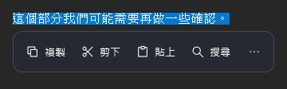
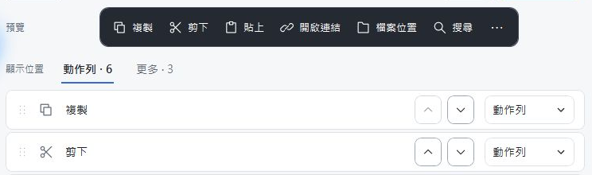

01 / 改寫
讓草稿更接近你想說的。
從「更多」開啟 AI 改寫。看完結果後，可以複製，或在可編輯的來源替換原文。
- 原文
- 這部分我們這邊還需要再確認一下，等確認完之後會再回覆你。
- AI 改寫 → 縮短 結果
- 我們確認後會再回覆。
AI 服務與金鑰需自行設定。執行指令時，選取的文字才會傳送至所選 AI 服務。
WINDOWS 選字工具列
在原本的視窗叫出工具列，直接複製、搜尋，或用 AI 改寫。
Windows x64 · 免登入下載 · ZIP 解壓即用 · 未簽章預覽版

從「更多」開啟 AI 改寫。看完結果後，可以複製，或在可編輯的來源替換原文。
AI 服務與金鑰需自行設定。執行指令時，選取的文字才會傳送至所選 AI 服務。
選擇哪些動作出現在動作列，調整順序，把其餘項目留在更多選單。
進一步加入網址、PowerShell 或 JavaScript 動作，讓選中的文字接上你的工作流程。
JavaScript 動作需另裝 Node.js。
調整前 · 搜尋收在「更多」
調整後 · 搜尋就在動作列上

把 ZIP 裡的檔案完整解壓縮到同一個資料夾。
執行 SnapBar.App.exe，再到記事本選一句文字。
用預設快捷鍵叫出工具列，試著複製或搜尋這句話。
已在使用 SnapBar？ 先從系統匣完整結束舊版，再解壓縮並開啟新版。同一台電腦、同一個 Windows 帳號會沿用已儲存的動作列、自訂動作與 AI 金鑰。
支援雙語的版本可到「一般 → 語言」選擇 English；請先查看下載版本的更新說明。新安裝跟隨 Windows 顯示語言，既有使用者升級後保留繁中。已開啟的編輯／結果視窗重新開啟後採新語言，內容與偏好保留。
在「一般」設定開啟「自動顯示動作列」，之後拖曳或雙擊選字即可試用。
需先設定自己的 AI 服務、模型與 API Key。服務可能另外計費。複製、搜尋等基本動作可獨立使用。
唯讀來源或無法確認可編輯狀態時，AI 結果提供複製。替換前會重新驗證原視窗與選取內容，來源改變時會取消操作。不同應用程式的選字支援程度會有差異。